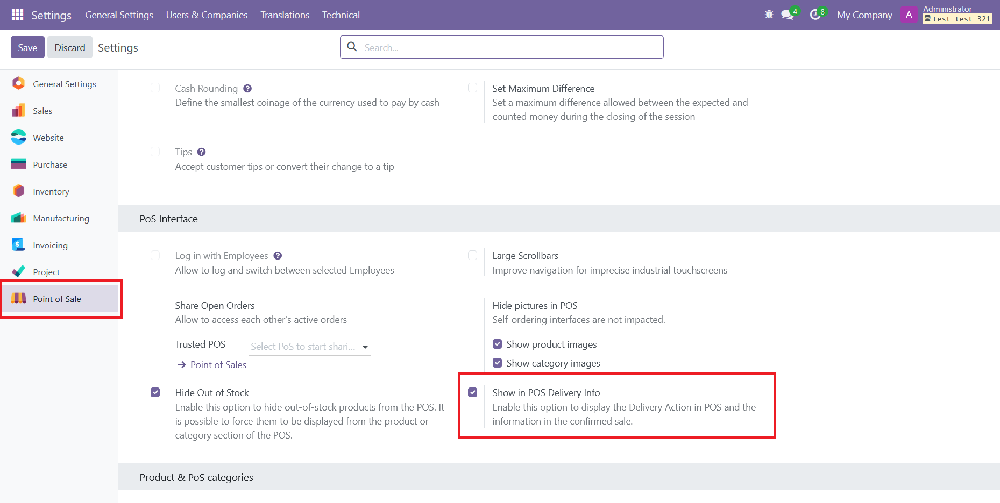
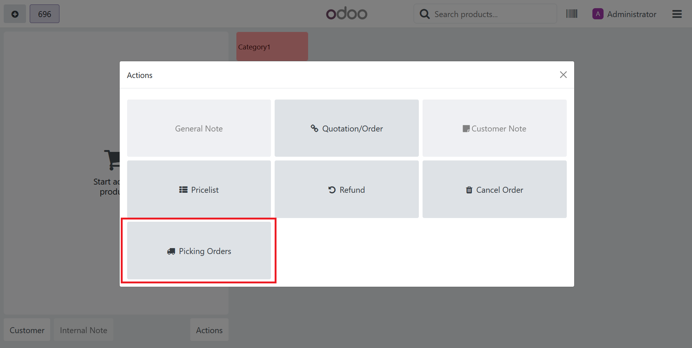
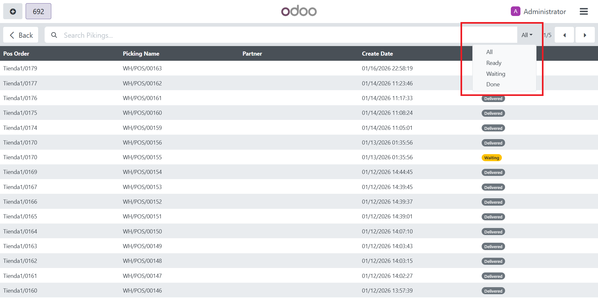
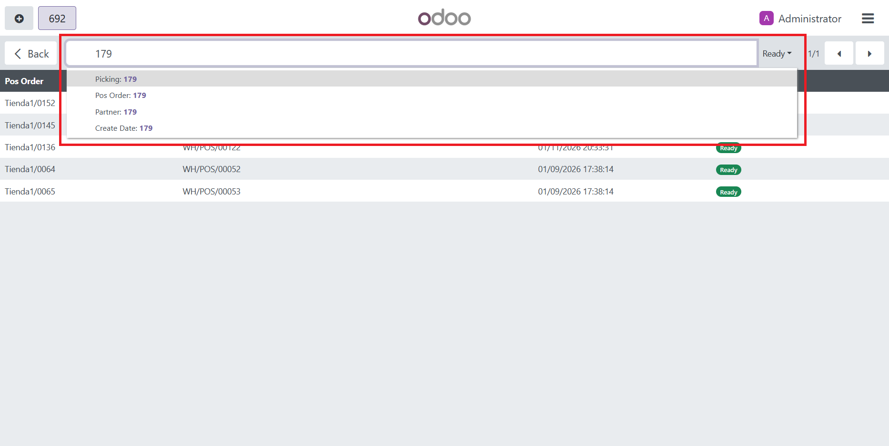

What it does
Manofacture from POS
Visualize in real time POS orders status
Confirm Delivery from POS
Visual Workflow
Manofacture Product
Make-to-Order Assignment

Visual Refernce
Shows whether a product / line is make-to-order in the product list, variant pop-up and order lines

Reference on Sale
Once the sale is confirmed, the picking linked to the manufacturing order(s) is created (all MOs are grouped into a single picking). The sale view then displays both the MO and picking details
Delivery Interface
A new action in the POS opens an interface where finished and pending orders / pickings can be viewed and filtered. Require activate the option in POS Settings




Confirm Delivery
Ready pickings (manufacturing completed) can be confirmed right from the POS